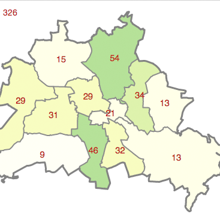
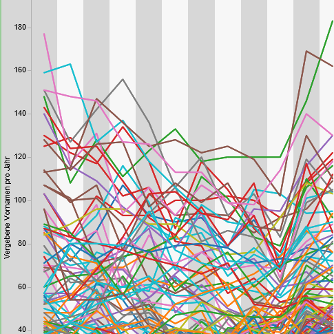

Wo gibt es Open Data Vornamen?
Open Government Data
Die aktuelle Statistik über Open Government Data in Deutschland, Österreich und der Schweiz.
Schweizer Daten sind noch nicht komplett evaluiert.
Beispiele
Die offenen Daten über Vornamen werden bereits verwendet. Hier eine Beispiele:
Baby benamsen
von Thomas Tursics
- 
Berliner Vornamen
von Knud Möller
- 
Florian und Jessica, Muhammed und Leonie: Vornamen in Wien
von Florian Gossy
rate my name
von Benjamin Grabner
Statistik Niederösterreich
von Benjamin Grabner
Les prénoms les plus portés
von Ville d'Issy-les-Moulineaux
Wo gibt es Open Data Vornamen?
Wo im deutschsprachigen Raum gibt es Open Data Portale?Und bieten sie auch Vornamen-Daten neugeborener Kinder an?
Diese Karte zeigt den aktuellen Stand in Sachen Open Data
und Vornamen in Deutschland, Österreich und der Schweiz an.
Habe ich ein Datenportal übersehen? Sag es mir:
Thomas Tursics • Frankfurter Allee 172 • 10365 Berlin